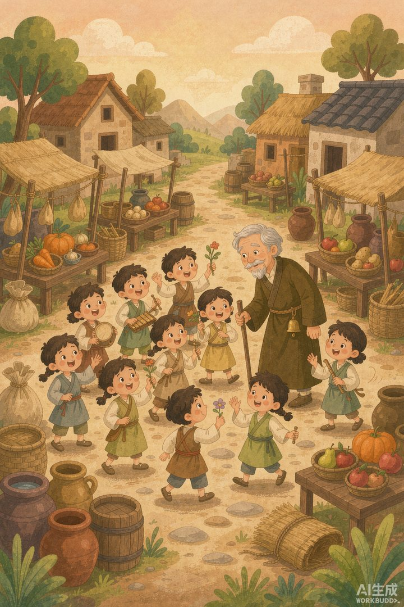
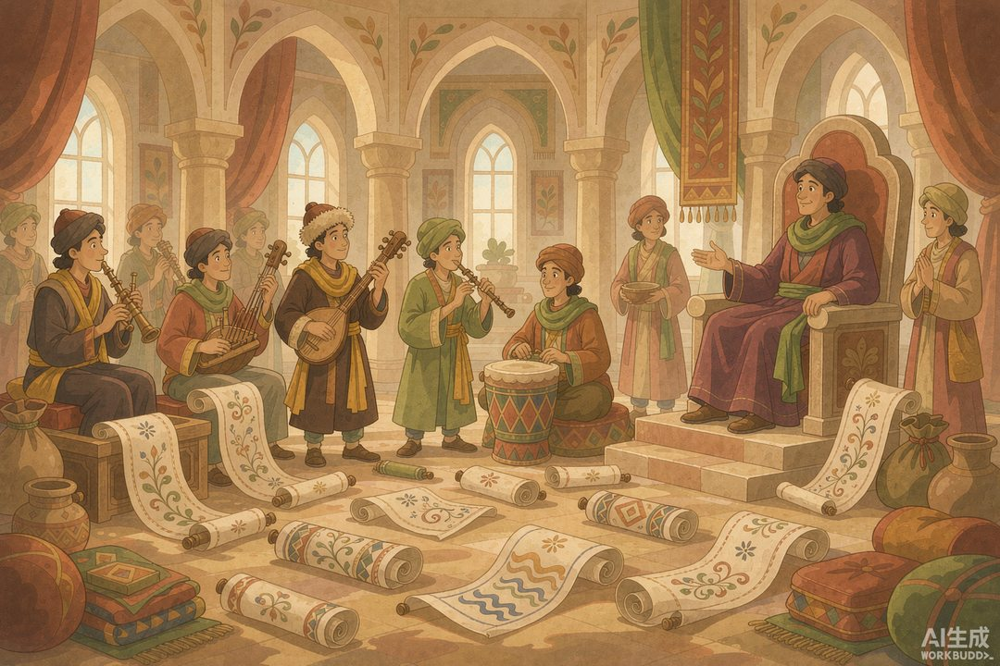

|
信息传播那些事儿 · 卷二 · 第 34 篇 |
|
童谣与民歌 —— 老百姓的"朋友圈"，也是古代的民意民调 |

▲ 采诗官摇着木铎走进市井，把民歌唱进宫里（AI 生成示意图）
|
上一段官员在邸报里读朝堂，可老百姓读不到邸报。那普通人靠什么了解天下、又靠什么开口说话？答案在街头巷尾——童谣和民歌。没有印刷机，也没有报社，但一首顺口溜能从村口传到京城，比邸报跑得还快。更妙的是，皇帝居然专门派人去"采"这些歌，当成治理的情报。今天说这套有点传奇的"民间广播系统"。 |
邸报是"自上而下"的官话，童谣和民歌是"自下而上"的民声。一个讲朝廷想让你知道的，一个讲朝廷未必想听、但老百姓真在传的。两条河，在"采诗"这个口子上汇到了一起。
一 | 木铎一摇，歌声进宫 |
周代就有"采诗"的讲究。《汉书·食货志》写得很有画面感：每年初春，农人要分散下田了，朝廷的"行人"就摇着木铎在路边走，收集民间歌谣，献给乐官，配上音律，再传给天子听。班固在《艺文志》里点明用意："古有采诗之官，王者所以观风俗，知得失，自考正也。"
一句话：唱歌本是娱乐，被国家收编后成了"情报"。哪里的赋税重了、哪里的婚俗乱了、哪里的教化昌明了，全藏在歌词里。茅盾说得更直白——采诗官"实际上就是一个到处搜索情报的人，情报即诗歌"。

▲ 乐府奏民歌：民间声音绕过官僚，直抵天子耳边（AI 生成示意图）
二 | 汉武帝的"民歌热线" |
到了汉武帝，这套制度被正式机构化。他设立乐府，命人"采诗夜诵"，收集来的有"赵、代、秦、楚之讴"——也就是从北到南各地的民歌。班固评价这些歌"感于哀乐，缘事而发"，既能看风俗，也能知厚薄。
这就是为什么我们今天还能读到《上邪》的决绝、《孔雀东南飞》的悲苦——它们本是无名百姓的口头创作，靠"采诗"才没散佚在风里。乐府既是朝廷的礼乐机关，也是古代最大的"民间文艺档案馆"。
三 | 童谣是古代的"热搜" |
民歌进了宫，童谣则在民间当起了"热搜"。东汉末年朝政败坏，街头巷尾的童谣一首接一首，全是带刺的。比如讽征羌之战的："小麦青青大麦枯，谁当获者妇与姑。丈人何在西击胡"——男人都被抓去打羌人，地里只剩妇孺收麦，字字是怨。再比如那句著名的"举秀才，不知书；察孝廉，父别居"，把察举选官制度的腐败嘲得底朝天。
童谣的好处是短、顺口、好记，大人小孩都能传。它不用印刷，靠嘴就完成"病毒式传播"，比任何官报都快、都野。
▲ 市井讽谣：一首顺口溜，比邸报跑得还快（AI 生成示意图）
四 | 十二个字的官场判决书 |
最狠的一句童谣，全文只有十二个字："直如弦，死道边；曲如钩，反封侯。"它出自东汉顺帝末年：大将军梁冀专权，刚直的太尉李固被诬杀、曝尸道旁，而曲意逢迎的胡广等人反而封侯。百姓用十二个字下了判决书——正直的像弓弦一样被折断死路边，弯曲的像钩子一样反倒封侯。
这首被收进《后汉书·五行志》，归类为"诗妖"（预言性的谶言）。可它哪是什么妖，分明是民意的快评。童谣进正史，说明连史官都承认：民间这首歌，比许多奏章更敢讲真话。
五 | 当童谣变成"考核指标" |
童谣厉害到什么程度？汉灵帝光和五年（公元 182 年），朝廷居然下诏，让公卿"以谣言举刺史、二千石为民蠹害者"——把民间流传的风谣，当成考核地方官贪廉善恶的依据。也就是说，老百姓嘴里的顺口溜，能决定一个太守是留还是撤。
当然，这套"民意考核"很原始，也常被操纵——不少童谣其实是党人集团为了政治斗争故意放出来的。但不管真的假的，它证明了一件事：在没有报纸的时代，歌声就是舆论，就是民调，就是一把悬在官头顶上的软刀子。
|
数字锚点 · 民谣里的"国家情报" | |||||||
|
|
🔔 下篇预告 · 第 35 篇《图书审查起源》—— 民歌能进宫被"采"，可一旦唱错了调、碰了逆鳞，麻烦就来了。古代对言论的管控，从什么时候开始？下一篇讲图书审查的起源。 |
史料转引自《汉书·食货志》《汉书·艺文志》、汉武帝立乐府采诗记载、《后汉书·五行志》所收东汉童谣，及汉灵帝光和五年"以谣言举刺史"诏令相关研究；配图为 AI 生成示意图。